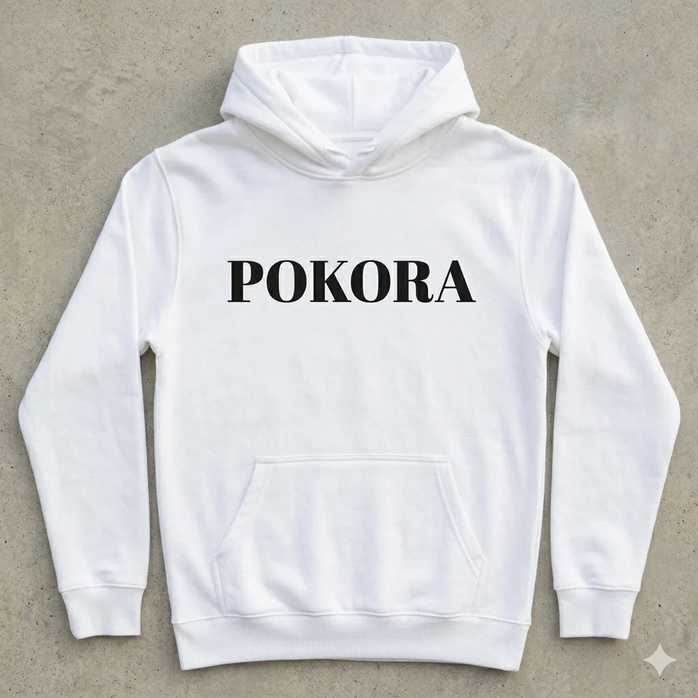

Tridsaťtri rokov viedla Živenu, prvý slovenský ženský spolok. Zakladala dievčenské školy, redigovala časopisy pre ženy, pričinila sa o záchranu ľudových výšiviek a pomohla ženám získať prácu. Keď stratila obe deti, napísala úprimnú spoveď Moje deti. Nikdy sa nesťažovala. Len budovala — bez fanfár, bez titulkov. Presne tak, ako to robia silné ženy. Vďačíme jej za veľa.
„Duševný obzor slovenských žien bol tesno a jednostranne ohraničený — všetky pokusy vyšinúť sa ponadeň boli považované za pochabosť."
Elena Maróthy-Šoltésová, 1898
Jej príbeh
Nezlomná
Elena Maróthy-Šoltésová vyrastala v Krupine v rodine, kde sa slovenčina nosila ako záväzok. Otec Andrej Maróthy — evanjelický farár, vlastenec — ju viedol k jazyku aj ku knihám. Keď sa vydala za Ľudovíta Šoltésa, preniesla si so sebou nielen priezvisko, ale aj odhodlanie robiť niečo zmysluplné. V roku 1894 prevzala predsedníctvo Živeny — a zostala v ňom tridsaťtri rokov.
V tých rokoch Živena nebola len spolok. Bola to sieť. Elena zakladala dievčenské školy a ľudové kurzy, starala sa o to, aby sa vzdelávanie nedostalo len k tým, čo si ho mohli dovoliť. Redigovala časopisy, dbala na to, aby ženské hlasy mali kde zaznieť. Stála za záchranou ľudových výšiviek, keď hrozilo, že toto dedičstvo zanikne. Mala dar vidieť, čo je dôležité — a trpezlivosť to vybudovať.
Jej život nebol ušetrený bolesti. Dcérka Elenka jej zomrela ešte ako dieťa. O roky neskôr pochovala syna Ivana a krátko na to aj manžela Ľudovíta. Keď sa s týmito stratami vyrovnávala, nestiahla sa — napísala. Jej knižka Moje deti je jedným z najúprimnejších textov, aké slovenská literatúra pozná: prosto a bez patosu pomenúva, čo to znamená milovať a prísť o to, čo miluješ. Smútok v nej neznemožňuje ďalšiu prácu. Stáva sa jej súčasťou.
Málokto vie, že táto silná žena sa v mladosti vyrovnávala aj s celkom inou pochybnosťou — o sebe samej, o tom, ako vyzerá. Od detstva ju prirovnávali k otcovi, ktorý telesnou krásou nevynikal, a keď sa v nej prebúdzala dievčenská márnivosť, zrkadlo jej ukazovalo tvár veľmi podobnú otcovej — bledú, nevyplnenú. Vtedy sa v nej niečo zmenilo: otca milovala nadovšetko. Byť jemu podobnou zrazu nebola nevýhoda — bola to pocta. To, čo iní mohli vnímať ako jej nedostatok, sa stalo jej slobodou. Celý život ju uchránilo pred márnivou túžbou po vonkajšej kráse — a ona mohla sústrediť svoju silu na niečo väčšie.
„Prekonávať márnivosť láskou donáša bohaté dary." — Elena Maróthy-Šoltésová
Jej cesta
Rok za rokom, bez fanfár.
Narodila sa v Krupine v rodine štúrovského básnika a farára Andreja Maróthyho. Slovenčina sa u nich doma nosila ako záväzok.
Vydala sa a presťahovala do Martina — centra slovenského kultúrneho života. Mala dvadsať rokov a celý svet pred sebou.
Vstúpila do Živeny a začala písať. Nie pre slávu — preto, že mala čo povedať.
Stala sa predsedníčkou Živeny. Funkciu zastávala tridsaťtri rokov — dlhšie, než dnes vydrží väčšina firiem.
Spoluzakladala Lipu — výšivkársky spolok, ktorý dal slovenským ženám prácu a zachránil vzory, ktoré dnes nosíme s hrdosťou.
Vydala Moje deti — knihu o dvoch stratených deťoch. Jeden z najúprimnejších textov slovenskej literatúry.
Po tridsiatich troch rokoch odišla z čela Živeny. Ticho, tak ako pracovala.
Zomrela v Martine. Jej posledné slová patrili priateľke Terézii Vansovej.
Jej tichá veľkosť
Skromná, tichá sila
Veľavážená žena
Odmietla ocenenia
Pri príležitosti životného jubilea ju profesor Albert Pražák z Univerzity Komenského oslovil s ponukou čestného doktorátu za celoživotné dielo. Elena Šoltésová ho odmietla.
„Doktorát patrí iba študovaným ľuďom, ktorí dlhé roky sa trudili, aby svojou vedou prispeli národu a svetu, a nie spisovateľke, ktorá vcelku len málo napísala."
Prežila peklo
Najtvrdšie rany ju nezmenili
Keď jej vo veku ôsmich rokov zomrela dcéra Elenka na tuberkulózu, nik by jej nezazlial, keby sa stiahla do súkromia. O roky neskôr pochovala aj syna Ivana a krátko po ňom aj manžela Ľudovíta. Napriek tejto osobnej bolesti neprestala pracovať pre ženy a kultúru, ku ktorým sa zaviazala. Smútok niesla bez hluku, bez nároku na ľútosť — a to, čo vybudovala práve v tých rokoch, hovorí samo za seba.
Čo ju poháňalo
Vyššie ciele
Tridsaťtri rokov stála na čele Živeny — najstaršieho ženského spolku na Slovensku. V tej funkcii zakladala ženské školy, organizovala vzdelávacie kurzy, redigovala časopis. No to, čo ju odlišovalo, nebola len húževnatá práca — bola to pohnutka za ňou. Vzdelanie žien nepovažovala za vec spolkovej reprezentácie ani osobnej ambície. Považovala ho za povinnosť voči celému národu.
Čo nás učí dnes
Jej boj nie je minulosť.
Jej odkaz
Elenin odkaz žije
- Pokora nie je slabosť, ale sila.
- Osobná tragédia ťa nemusí zlomiť — môže ťa posunúť vpred.
- Buduj pre vec väčšiu, než si ty sama.
- Vzdelanie je právo každej ženy, nie privilégium vyvolených.
- Tiché odhodlanie mení viac než hlučné gestá.
Milá moja,
píšem Ti z Martina, kde sa večer skláňa nad strechami a ja mám konečne chvíľu len pre seba. Celý deň sme riešili, ako otvoriť ďalšiu školu — peniaze nie sú, ochota chýba, a predsa viem, že bude stáť. Nie tento rok. Možno ani ďalší. Ale bude.
Vieš, čo som pochopila? Že na veľké veci netreba veľké gestá. Treba prísť aj zajtra. A pozajtra. Aj vtedy, keď nikto netlieska — vlastne hlavne vtedy.
Keby si niekedy pochybovala, či je Tvoja tichá práca dosť — je. Tá moja tiež nebola na titulkoch. A predsa tu dnes spolu stojíme.
Tvoja Elena
P. S. Takéto listy — písané na motívy jej skutočného života a tvorby — Ti môžu prichádzať poštou každý mesiac. Pozri si predplatné Píšem Ti. →
Vzor a región
Turiec, výšivka, fialová.
Krupina · Martin · Turiec
Vzor, ktorý zachránila.
Keď v roku 1910 spoluzakladala výšivkársky spolok Lipa, nešlo o nostalgiu. Ľudová výšivka vtedy zanikala — a s ňou aj jediný spôsob, akým si mnohé slovenské ženy vedeli zarobiť vlastné peniaze. Lipa dala výšivke trh a vyšívačkám mzdu.
Martinský geometrický ornament — hlboká fialová a biela niť — je preto viac než dekorácia. Je to pripomienka, že krása a samostatnosť žien môžu rásť z tej istej nitky. Nosíme ho v kolekcii POKORA.
Kolekcia POKORA — E.M. Šoltésová
Nos jej odkaz.
Pokora nie je slabosť. Je to sila. Oblečená do každodenného života.

Mikina · Unisex · predná strana
Šoltésová POKORA
od 48 €

Mikina · Unisex · zadná strana
Šoltésová POKORA
od 48 €
Ďalšia rebelka
Božena Slančíková-Timrava
Uprímnosť
Hovorila pravdu, aj keď za to nemala mať radi. Odmietla romantizovať realitu. A písala to tak, aby to bolelo — lebo inak to nebola pravda.
Spoznaj Timravu →